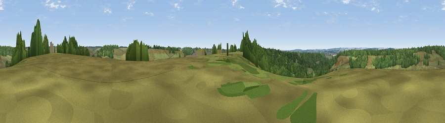

Viewpoint near Godshill
#37543 in England · top 52% of its area beats it · near Godshill · open accessWhere it is
The exact computed spot (SU 18575 15775). Click the marker for map links.
Public access: this spot lies on mapped open-access land (CRoW Act 2000) — you may roam here on foot. Computed from Natural England's CRoW access layer and OpenStreetMap rights of way — not the legal definitive map. Always verify locally.
The view, rendered

A 360° render of this exact spot computed from the terrain model, tree cover and land cover — summer colours, afternoon light, calibrated against photographs of famous viewpoints. Real trees, hedges and buildings will differ in detail.
The panorama
Grey silhouette: terrain skyline in each direction (720 bearings, Earth curvature and refraction included). Dashed green: skyline with trees (+15 m) and buildings (+8 m) as obstacles. Blue strip: how far the ground is visible on each bearing.
Where the view opens
Wedge length = distance to the farthest visible ground on that bearing (vegetation-aware). Rings at 10, 25 and 50 km.
What fills the view
64% grassland · 33% woodland · 3% cropland
Angular shares of the visible panorama (visual magnitude), not map area. Landscape diversity 0.33 (0–1 Shannon).
Key numbers
More beautiful places nearby
The staircase of upgrades: each row has a higher view potential than everything closer. Driving times are estimates from straight-line distance, calibrated against real road routing — check an actual route before setting out.
| Place | Direction | Drive | Score |
|---|---|---|---|
| Viewpoint near Godshill | S · 2 km | ~5 min | 34.9 |
| Viewpoint near Frogham | S · 2 km | ~6 min | 40.2 |
| Viewpoint near Redlynch | N · 7 km | ~14 min | 40.8 |
| Viewpoint near West Grimstead | NNE · 9 km | ~17 min | 50.6 |
| Viewpoint near West Grimstead | NNE · 9 km | ~18 min | 54.6 |
| Viewpoint near Martin | W · 14 km | ~26 min | 64.6 |
| Viewpoint near Cranborne | W · 15 km | ~26 min | 65.0 |
| Trow Down | WNW · 22 km | ~37 min | 67.5 |
50.94112, -1.73700 · source: screening · position refined by local search. Computed location — check access rights before visiting.